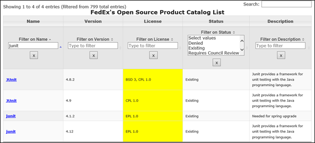
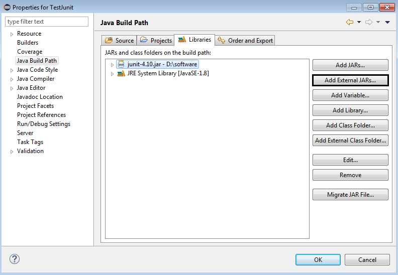
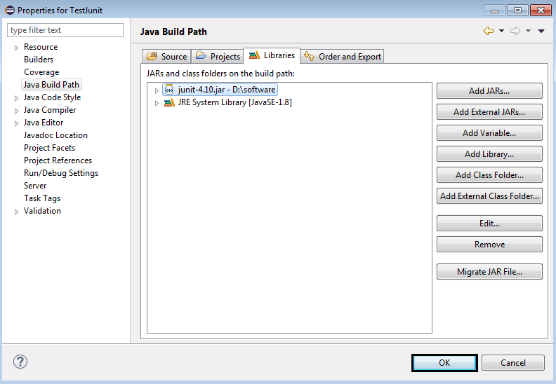
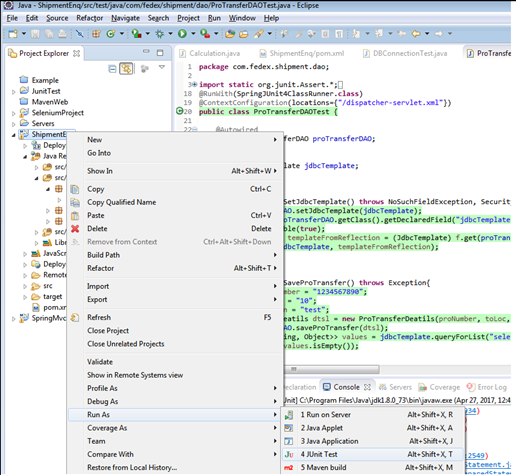
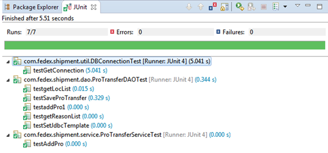

JUnit
JUnit is an unit testing framework for Java programming language. Unit testing means testing the smaller units of your application, which is a method. JUnit has been important in the development of test-driven development (TDD). Test Driven Development (TDD) is a development style in which you write the unit tests before you write the code to test.
Test-driven development(TDD) is a development technique where you must first write a test that fails before you write new functional code.TDD is being quickly adopted by agile software developers for development of application source code.
Installation of JUnit Plugin with Eclipse
Get JUnit Archive from FOSS: junit-4.10.jar (recommended 4.0 and above, Latest version is 4.12)

Set Eclipse Environment: Open eclipse ? right click on project and click on property > Build Path > Configure Build Path and add the junit-4.10.jar in the libraries using the button Add External Jar.

Click on OK button.

Run the test cases as shown below

Report will be show as below

|